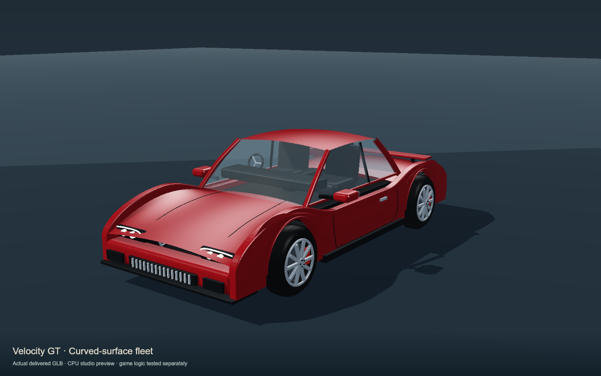
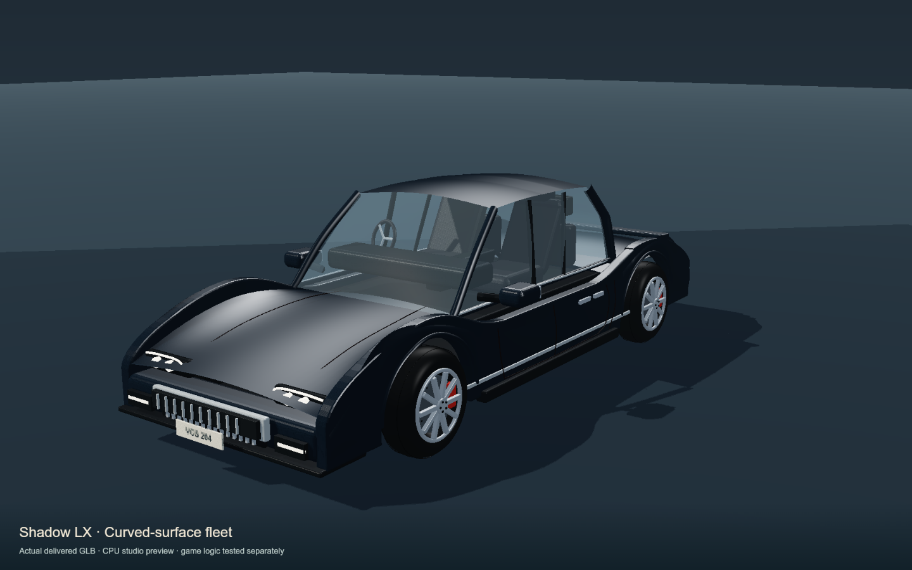
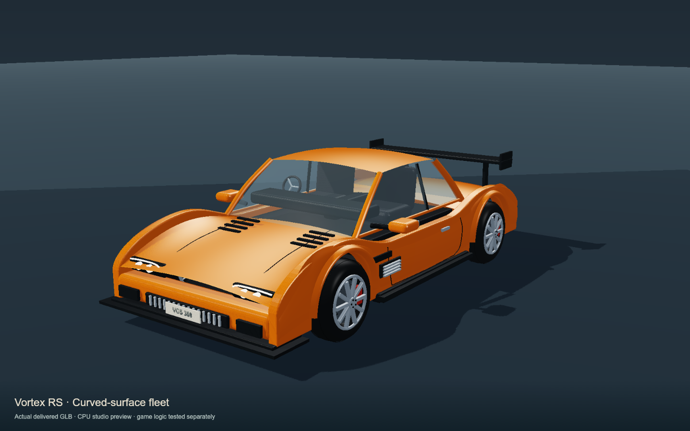
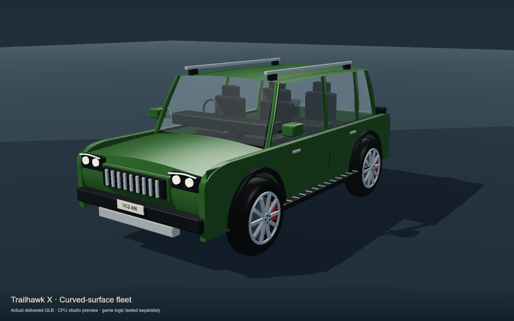
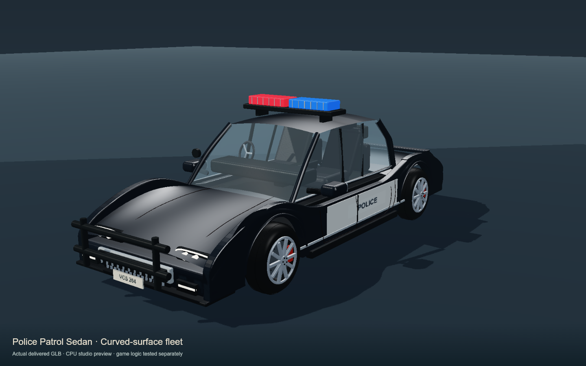
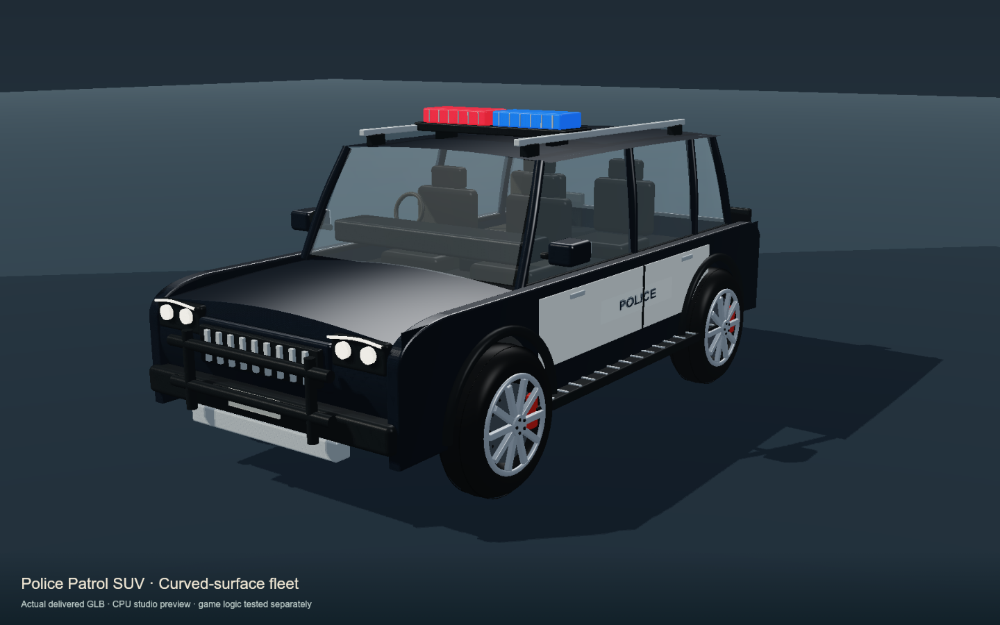

GARAGE COLLECTIONVelocity GT1,02,052 triangles · 32 meshessports coupe body · visible cabin · independent wheels · compound-curved panels · curved glazing · rounded edge profiles.Inspect 3D model ↗Download GLB
GARAGE COLLECTIONShadow LX1,10,804 triangles · 38 meshesfour-door body · raised cabin · rear seating · chrome beltline · independent wheels · compound-curved panels · curved glazing · rounded edge profiles.Inspect 3D model ↗Download GLB
GARAGE COLLECTIONVortex RS1,10,432 triangles · 36 mesheswidebody arches · carbon skirts · air extractors · track rear wing · independent wheels · compound-curved panels · curved glazing · rounded edge profiles.Inspect 3D model ↗Download GLB
GARAGE COLLECTIONTrailhawk X1,07,384 triangles · 33 meshescurved wheel arches · separate transparent windows · four-seat cabin · roof rails · running boards · independent wheels · compound-curved panels · curved glazing · rounded edge profiles.Inspect 3D model ↗Download GLB
PATROL FLEETPolice Patrol Sedan1,16,788 triangles · 43 meshesblack-and-white livery · police door markings · red-blue emergency bar · push bar · visible cabin · independent wheels · compound-curved panels · curved glazing · rounded edge profiles.Inspect 3D model ↗Download GLB
PATROL FLEETPolice Patrol SUV1,13,368 triangles · 38 meshesblack-and-white livery · police door markings · red-blue emergency bar · push bar · visible cabin · independent wheels · compound-curved panels · curved glazing · rounded edge profiles.Inspect 3D model ↗Download GLB